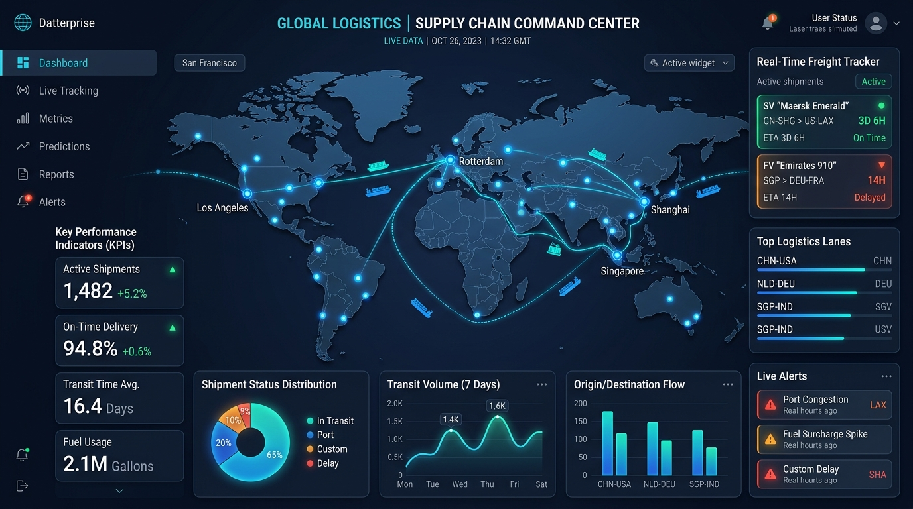
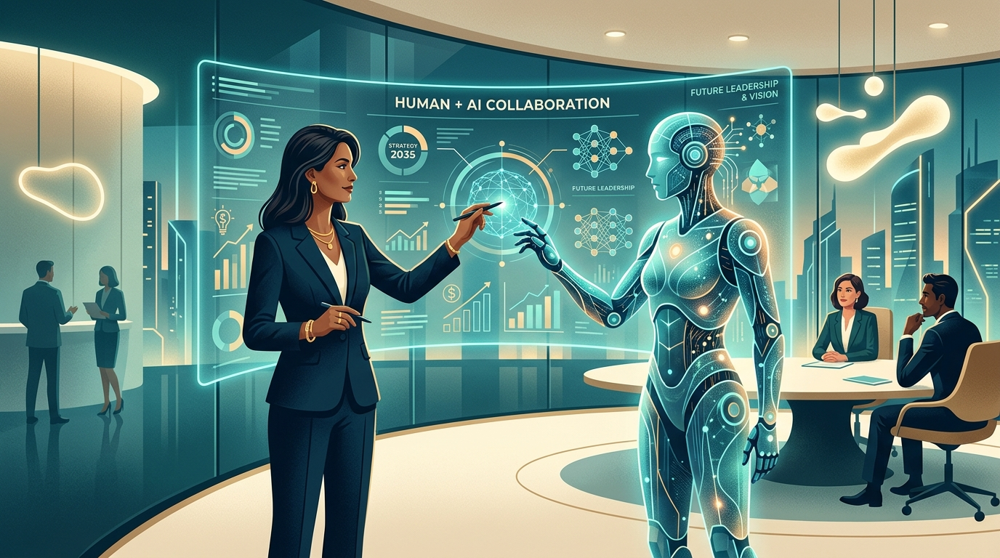

Architecting Tech-Enabled Supply Chains & Global Operations.
Rooted in 5+ years of entrepreneurial execution as Founder & CEO of Socconoa Autocomp and backed by a Master’s in Engineering Management from RMIT University. I fuse operational grit, AI data analytics, and Total Cost of Ownership (TCO) strategy to build resilient global supply networks.
Socconoa Autocomp
Bootstrapped and scaled a specialized logistics and sourcing enterprise supplying high-precision automation components to tier-1 manufacturing OEMs.
End-to-End Precision Sourcing & Global Freight Management
Founded in June 2020, Socconoa grew into a high-trust sourcing backbone for industrial leaders. Directed a cross-functional team of 10, negotiated SLA-based procurement contracts, and managed international customs clearance lifecycles across complex global supply nodes.

Creative & Strategic Insights
Explorations on building resilient leadership organisations, human-centered AI workforce transitions, total cost of ownership in logistics, and mechanical digital twins.

Building Leadership Organisations
How bootstrapping Socconoa Autocomp taught me to scale cross-functional teams, earn enterprise trust with giants like Bosch and L&T, and cultivate operational resilience.
Leading AI Workforce Transformations: Thoughts & Musings
Why the true barrier to AI adoption isn't technology—it's human adaptability, workflow clarity, and upskilling teams beyond static Excel spreadsheets.
Importance of Integrated Logistics Management
Why modern supply chain management is about Total Cost of Ownership (TCO), risk mitigation, and end-to-end visibility—not just moving boxes.
AI & IoT in Supply Chain: The Next Frontier
Insights from my Master's research thesis on multi-tiered medical supply chains, sensor telemetry, and self-healing logistics pipelines.
Predictive Maintenance & Mechanical Digital Twins
From piezoelectric energy harvesting speed breakers to WinCast foundry simulations: how mechanical engineering fundamentals empower smart operations.
Extended Experience & Education
Comprehensive career trajectory spanning entrepreneurial leadership, data analytics, international procurement, and engineering research.
Practice Coordinator & Operations Lead
Directing end-to-end clinical operations, administrative logistics, and front-desk throughput for a busy healthcare facility.
- Maximizing patient workflow throughput through optimized scheduling and staff rostering algorithms.
- Managed procurement and vendor relationships for critical consumables, enforcing strict inventory governance and reorder triggers to eliminate stockouts.
- Processed and reconciled high-volume billing frameworks (Medicare, DVA, private health insurance claims) ensuring financial accuracy and compliance.
Founder & Chief Executive Officer
Bootstrapped and scaled a specialized logistics and sourcing enterprise providing high-precision automation components to manufacturing OEMs.
- Led a cross-functional team of 10 spanning procurement, engineering, freight forwarding, and client relations.
- Directed international freight forwarding and customs clearance lifecycles, maintaining a 97% on-time delivery rate across a complex global logistics network.
- Negotiated high-stakes SLA contracts with major clients including Bosch, MRF India, Wipro, L&T, Vizak Steel, Motherson, and ACG Group.
- Architected a proprietary Python-based automation dashboard to eliminate manual Excel tracking, PO processing, and quotation generation.
- Currently operating as Non-Executive Director and primary shareholder.
Research Intern - IoT & Energy Systems
- Engineered a kinetic-energy harvesting speed breaker using CAD simulations and mechanical modeling.
- Integrated piezoelectric sensors to capture real-time vehicle speed and vibrational telemetry for predictive infrastructure wear estimation.
Design Engineering Intern
- Specialized in foundry simulation software (WinCast) to model metal casting workflows and structural integrity.
- Identified structural defect points in virtual models, reducing material waste and cutting client simulation runtimes by 25%.
- Supported technical client pitches resulting in a 60% conversion rate across regional foundry partners.